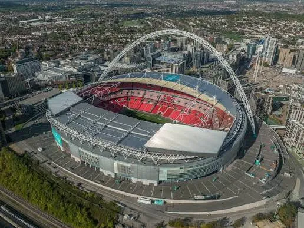

Wembley Stadium to jeden z najsłynniejszych stadionów piłkarskich na świecie. Znajduje się w Londynie w Anglii. Jest narodowym stadionem Anglii. Obecny obiekt został otwarty w 2007 roku. Zastąpił on stary stadion Wembley. Stary Wembley był znany z dwóch wież. Nowy stadion ma charakterystyczny łuk konstrukcyjny. Łuk Wembley jest widoczny z dużej odległości. Stadion ma pojemność około 90 tysięcy widzów. Jest drugim co do wielkości stadionem w Europie. Na Wembley rozgrywane są mecze reprezentacji Anglii. Odbywają się tam również finały Pucharu Anglii. Na Wembley odbył się finał Euro 2020. Stadion był również miejscem finałów Ligi Mistrzów. Jest sercem angielskiej piłki nożnej.